Home / Past papers / MLP Quiz 1 / this paper
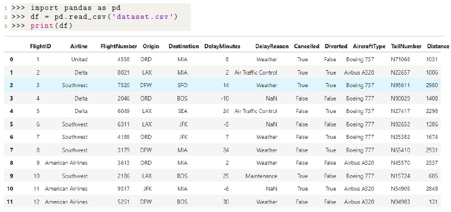
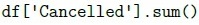
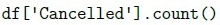
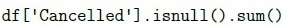
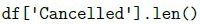
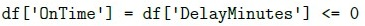
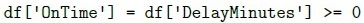
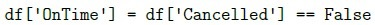
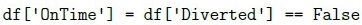
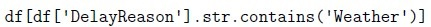
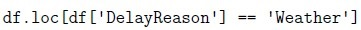
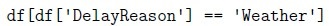
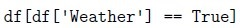
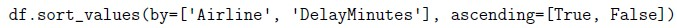
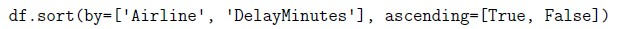
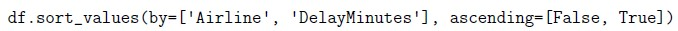
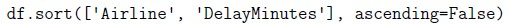
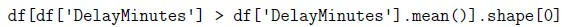
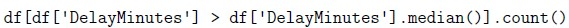
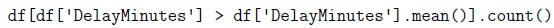
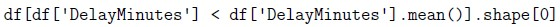
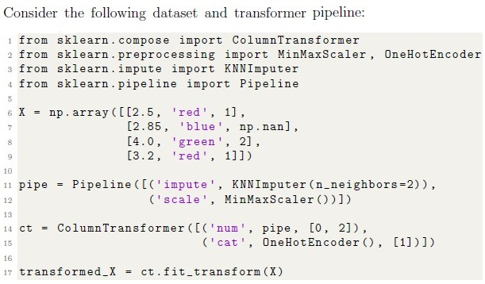
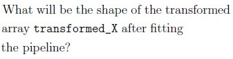
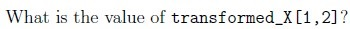
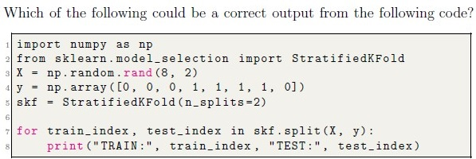
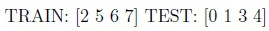
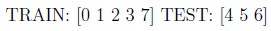
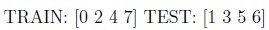
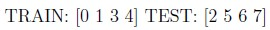
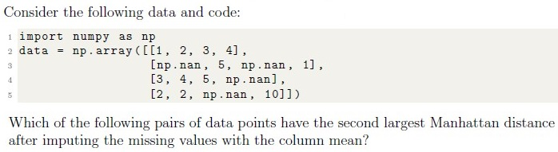
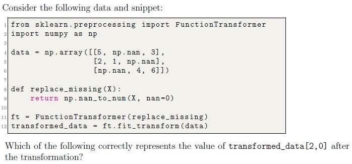
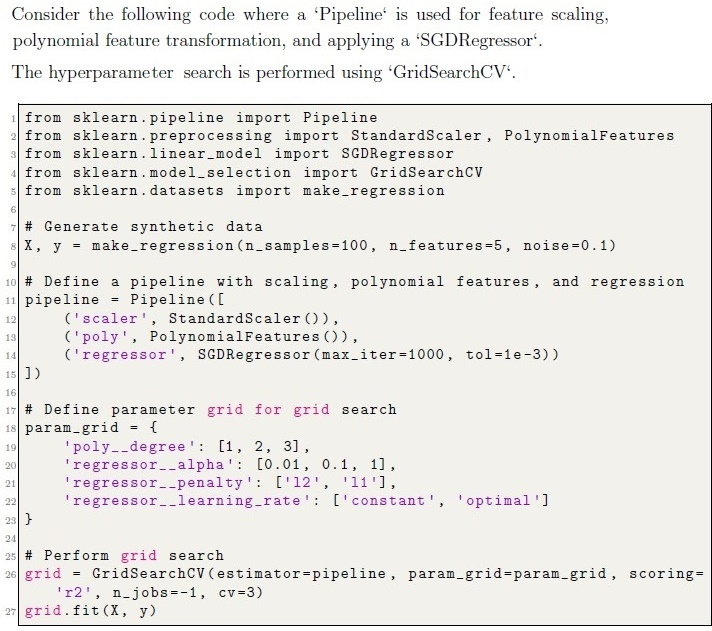
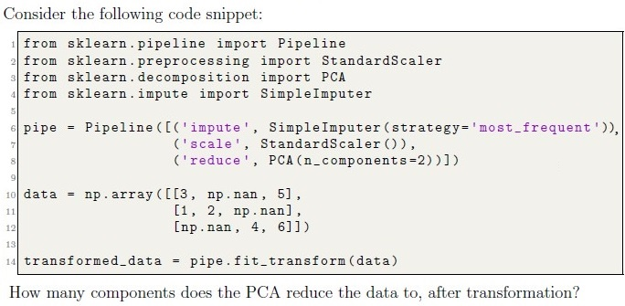
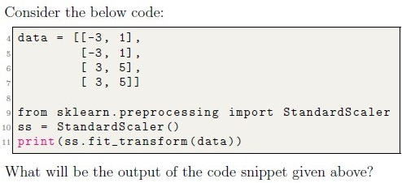
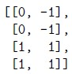
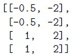
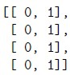
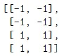
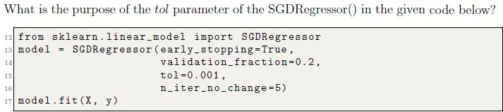
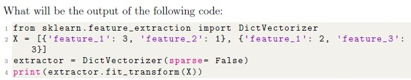
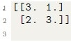
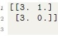
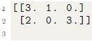
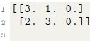
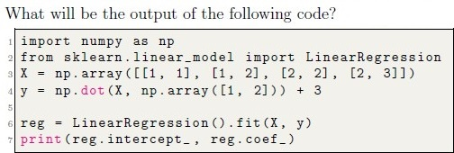
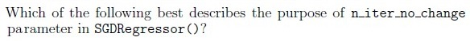
Auto-generated summary from the source site. Handy as a checklist; the lessons above explain each idea from scratch.
df['Cancelled'].sum(), df['Cancelled'].count()df[df['DelayReason'] == 'Weather']df.sort_values(by=['Airline', 'DelayMinutes'], ascending=[True, False])df['DelayMinutes'].mean(), df['DelayMinutes'].median()One-Hot Encoding: Converting categorical variables into a form that can be provided to machine learning algorithms.
from sklearn.preprocessing import OneHotEncoder
encoder = OneHotEncoder()
encoded_data = encoder.fit_transform(categorical_data)StandardScaler: Standardizing features by removing the mean and scaling to unit variance.
from sklearn.preprocessing import StandardScaler
scaler = StandardScaler()
scaled_data = scaler.fit_transform(data)MinMaxScaler: Scaling features to a given range.
from sklearn.preprocessing import MinMaxScaler
scaler = MinMaxScaler()
scaled_data = scaler.fit_transform(data)KNNImputer: Imputing missing values using k-nearest neighbors.
from sklearn.impute import KNNImputer
imputer = KNNImputer(n_neighbors=2)
imputed_data = imputer.fit_transform(data)Pipeline: Sequentially applying a list of transforms and a final estimator.
from sklearn.pipeline import Pipeline
pipeline = Pipeline([('impute', KNNImputer(n_neighbors=2)), ('scale', MinMaxScaler())])
transformed_data = pipeline.fit_transform(data)ColumnTransformer: Applying different transforms to different columns.
from sklearn.compose import ColumnTransformer
ct = ColumnTransformer([('num', pipeline, [0, 2]), ('cat', OneHotEncoder(), [1])])
transformed_data = ct.fit_transform(data)StratifiedKFold: Providing train/test indices to split data in train/test sets.
from sklearn.model_selection import StratifiedKFold
skf = StratifiedKFold(n_splits=2)
for train_index, test_index in skf.split(X, y):
print("TRAIN:", train_index, "TEST:", test_index)GridSearchCV: Exhaustive search over specified parameter values for an estimator.
from sklearn.model_selection import GridSearchCV
grid = GridSearchCV(estimator=pipeline, param_grid=param_grid, scoring='r2', n_jobs=-1, cv=3)
grid.fit(X, y)SGDRegressor: Linear model fitted by minimizing a regularized empirical loss with SGD.
from sklearn.linear_model import SGDRegressor
model = SGDRegressor(max_iter=1000, tol=1e-3)
model.fit(X, y)LinearRegression: Ordinary least squares Linear Regression.
from sklearn.linear_model import LinearRegression
model = LinearRegression()
model.fit(X, y)